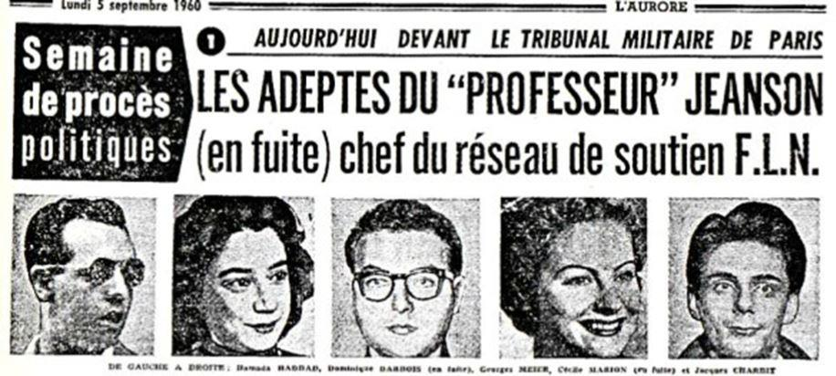
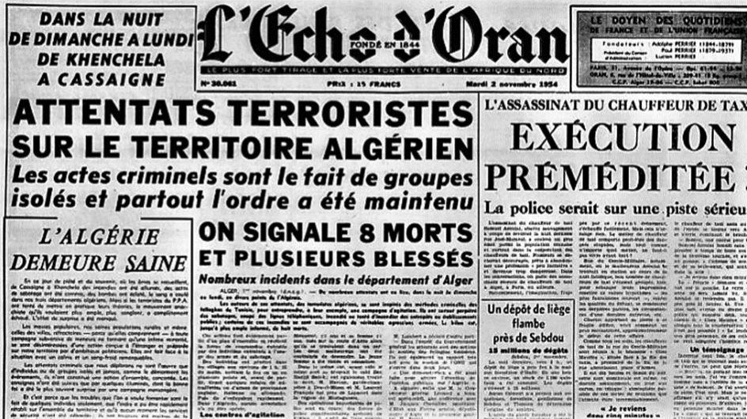

« Les Algériens savent la part prise par les vrais chrétiens dans notre lutte libératrice. Certains nous ont aidés concrètement, n’hésitant pas à se trouver à nos côtés… » (Ahmed Ben Bella)
Comme il se trouve aujourd’hui des représentants de l’Église pour encourager l’immigration et soutenir au nom de « l’amour de son prochain » toute une faune de dévoyés antifrançais, il s’est toujours trouvé, en Algérie et en France, de 1954 à 1962, des hommes d’Église pour couvrir les excès des égorgeurs du FLN, les héberger, les protéger et les soigner.
L’identité idéologique de ce conflit algérien était avant tout antichrétienne. C’est d’une lutte entre la Croix et le Croissant qu’il s’agissait et aux yeux des responsables du FLN, c’est la Croix qui était l’objectif premier à abattre dans ce réduit chrétien sud méditerranéen. Comme Jeanne d'Arc l'avait fait pour la France, l'Église de France et celle d'Algérie auraient dû brandir à leur tour l'Étendard de la Délivrance contre ceux qui voulaient les soumettre au Croissant. De façon incompréhensible et difficilement explicable (à moins qu’il ne se fût agi que de « tendre l’autre joue »), elles allaient leur apporter leur soutien…
Nos évêques « tiers-mondistes », aujourd’hui comme hier, si prompts à défendre les « droits de l’Homme » au détriment de la parole de l’Évangile, sont restés muets devant les crimes, les massacres, les viols et les égorgements du FLN. L’extermination de 150.000 harkis avec leur famille dans d’horribles tortures ne les a pas plus émus. Il est vrai que, probablement blasés par tant de crimes, ils ne pouvaient que demeurer insensibles à ces assassinats en séries que furent les massacres d’El-Halia et de Melouza, la tuerie du 26 mars 1962 à Alger et celle du 5 juillet 1962 à Oran. Dès lors, comment auraient-ils pu réagir à l’énoncé de cet ignominieux appel au meurtre du 14 février 1962 à 20h40 lancé par « La Voix des Arabes » en ces termes : « Frères combattants, combattez-les, luttez contre eux, ils sont tous nos ennemis. Transformez leur vie en enfer, ne les laissez pas échapper au châtiment mérité et contraignez-les à se mettre à genoux devant la volonté du peuple »… appel qui conduisit au pogrom anti-Français du 5 juillet 1962, à Oran, faisant plusieurs milliers de victimes parmi la population civile européenne.
Se sont-ils indignés davantage, ces honorables évêques –toujours prêts cependant à trouver une excuse aux « actes désespérés » des écorcheurs- quand ils ont pris connaissance de ces conseils donnés par « Aspect véritable de la rébellion algérienne » aux « frères » de l’Aurès, extraits du journal « El Zitouna » du 26 aout 1956, organe des étudiants de la Grande Mosquée du même nom de Tunis, une des plus réputées du monde islamique :
« Mes frères, ne tuez pas seulement mais mutilez vos adversaires sur la voie publique… Crevez-leur les yeux… Coupez-leur les bras et pendez-les… Soyez certains, mes frères, que les soldats qui verront leurs camarades pendus à un arbre, avec un bras et une jambe en moins et un œil crevé, soyez certains, que ces soldats laisseront à l’avenir passer les caravanes d’armes et de provisions et se sauveront comme des rats ».
Mais l’aide de l’Église ne s’arrêta pas à sa seule clémence envers les assassins. Sa participation active, en bien des cas, fut de notoriété publique…
Si, a priori, l’Église n’a de pouvoir que celui de la parole du Christ, il en est autrement dans les faits. En effet, son influence demeure et nous ne pouvons oublier combien elle a marqué la scène politique de la guerre d’Algérie…
Dès le début des événements, les nationalistes algériens disposaient de sérieuses connivences dans le milieu des intellectuels et ecclésiastiques français, qui s’étaient déjà fourvoyés durant le conflit indochinois en apportant leur aide au vietminh. Parmi ces « pères de l’Eglise », il était de notoriété publique que l’abbé Scotto (de Bab el Oued), l’abbé Desrousseau (d’El Biar), l’abbé Bérenguer (de Frenda), favorisaient le travail d’un couple de professeurs, les Jeanson (de sinistre mémoire), qui aboutira à la parution en 1955, de « l’Algérie hors la loi », pamphlet qui entendait prouver la légitimité du FLN… puis à la mise sur pied des réseaux de « porteurs de valises » du même nom : les « réseaux Jeanson ».
Dès 1956, les aides aux tueurs du FLN se multiplieront sous les formes les plus variées : protection, caches, approvisionnement en argent et en armes… Chez les progressistes chrétiens, journalistes et prêtres fourniront un contingent très important… Des femmes verseront également dans la collaboration en hébergeant des chefs rebelles, les transportant et distribuant les ordres. Les poseuses de bombes, musulmanes et européennes, feront tranquillement retraite chez les Sœurs blanches à Birmandreis ou chez les Clarisses à Notre Dame d'Afrique qui, pourtant, les savaient recherchées par la police. Chez les Pères Blancs, le Père Collet n'ignorait pas les activités de ses hôtes de passage…
La police identifiera plusieurs prêtres de la « Mission de France » dont certains prêtres ouvriers, Jean Urvoas et Robert Davezies ainsi que l’abbé Boudouresque qui se feront particulièrement remarquer… Quant à l'abbé Bertal, de cette même mission, il donnera asile à Daniel Timsit et à Salah, alias Oussédik Souali, qui lui avoueront, pourtant, fabriquer des bombes. Ce réseau d’artificiers comprenait, en outre, Chafika Meslem, agent de liaison entre le FLN, le Parti Communiste Algérien et les libéraux, Denise Walbert et les époux Gautron, militants communistes. L’abbé Barthez sera l’hôte et le protecteur attitré de ce réseau, hébergeant de surcroît, en quasi-permanence, la fameuse Raymonde Peschard (la pasionaria communiste) qui avait placé une bombe dans un car de ramassage scolaire à Diar es-Saada.
En 1957, le passage de terroristes clandestins à la frontière espagnole s’était amplifié. Il s’agissait de « spécialistes » de l’organisation spéciale du FLN, formés aux « actions ponctuelles » et à la manipulation des explosifs dans les camps du Maroc. L’abbé Davezies, Etienne Bolo, Jacques Vignes participeront activement au transport, à l’hébergement, à la mise en place des tueurs envoyés par le GPRA pour intervenir en France. En Algérie, une dizaine de prêtres dont les abbés Scotto, Bérenguer, Desrousseau, Barthez et Cortes, ainsi que des religieux de Notre Dame d’Afrique, seront impliqués dans les réseaux de soutien allant jusqu’à mettre leur presbytère à la disposition des égorgeurs. Assurés de trouver dans la maison du Seigneur l'abri et l'aide leur permettant de continuer leur œuvre criminelle, ces protégés pourront ainsi préparer attentats et exactions sans être inquiétés.
Le 4 Avril 1957, 28 inculpations et 18 mandats de dépôt (préventive) interviendront à Alger dans l'affaire du soutien au FLN apporté par les « libéraux » (on ne dit plus « communistes »). Parmi eux, la poseuse de bombe, Raymonde Peschard… qui s’évadera et rejoindra le maquis. Elle sera tuée les armes à la main dans le Constantinois (ce qui n'empêche pas de la présenter, encore de nos jours, comme torturée et assassinée par les paras). L’abbé Barthez, deux conseillers municipaux et deux médecins feront partie de ces arrestations. Seule la protection papale et gouvernementale dont il est l’objet évitera à Monseigneur Duval, archevêque d’Alger, chef de file des soutiens du FLN, d’être lui-même inculpé…
Pour ces « hommes d’église », les Français d’Algérie n’avaient pas le droit de se défendre contre les actes criminels des terroristes. Selon leur conception de la « charité chrétienne », le devoir de ces Français-là était, soit de fuir, soit de se laisser tuer, soit de ramper, soit de faciliter l’émergence de la nouvelle république algérienne. Leur argumentation était la suivante : « l’Église s'est toujours compromise avec les forces de la réaction ; il est temps qu'elle s'inscrive dans le camp de la révolution prolétarienne ». En réalité, ces traîtres à leur Patrie s'identifiaient parfaitement à « l'anti-croisé » dont l’une des figures, l'abbé Scotto, n’avait de cesse de rassurer ceux qui pouvaient réprouver les attentats aveugles du FLN. Pour ce curieux directeur de conscience, la cause des terroristes demeurait juste quels que fussent les moyens utilisés...
Concernant Monseigneur Duval, tout le monde, à Alger, police comprise, savait que les immeubles de l’Évêché abritaient les chefs du FLN en transit dans la capitale, et même certains terroristes recherchés par la police et l’armée. Arabophile déclaré, il refusera, officiellement, de célébrer un office à la mémoire de soldats français, prisonniers du
FLN, assassinés par leurs geôliers « pour ne pas heurter les Arabes », osera-t-il préciser de la manière la plus abjecte.
Dans son livre « Au nom de la vérité », il s’enorgueillira d’avoir obtenu par les chefs du FLN un satisfecit lors du congrès de la Soummam qui soulignait « l’attitude réconfortante de l’archevêque se dressant courageusement et publiquement contre le courant et condamnant l’injustice coloniale ». A la proclamation de l’indépendance, il fut l’un des premiers chrétiens à prendre la nationalité algérienne (tout comme l’abbé Scotto et l’abbé Bérenguer), ce qui lui valut d’abord le surnom de Mohamed et ensuite la pourpre cardinalice…
Parmi les progressistes chrétiens, les protestants ne furent pas en reste… En mars 1958, par exemple, le pasteur Mathiot fut inculpé avec une équipe de fidèles : responsables de boîtes aux lettres, dépôts d’armes, collectes de fonds, hébergement et de complicités diverses avec les terroristes du FLN. Cependant, à l’opposé, bon nombre de prêtres soutenaient l’action de l’Algérie française, mais quand ils n’étaient pas mis au ban de l’Église par leur hiérarchie, il arrivait qu’ils fussent purement et simplement éliminés… à l’instar de l’abbé Therrer, curé des Sources, à Birmandreis. Pourquoi donc n’avoir pas dit, dans son éloge funèbre, qu’il avait été assassiné par le FLN, protestèrent ses paroissiens ? Pourquoi donc n’avoir pas rappelé que les derniers mois de sa vie furent un véritable calvaire ? Il vit son église, à peine édifiée, profanée et pillée à deux reprises ; il vit aussi son presbytère entièrement dévalisé, sa voiture lapidée à plusieurs reprises… mais l’Évêché demeura de marbre… Enfin, le soir de son assassinat, son église fut incendiée et l’Église ne réagit point. Au cours des mois suivants, plus de quatre cents églises, sur les cinq cent soixante-sept que comptait la Chrétienté d’Algérie, furent désaffectées, profanées, parfois transformées en mosquées ou détruites, ce qui n’émut pas outre mesure ni Clergé, ni Épiscopat…
Dès la proclamation du « cessez-le-feu », les enlèvements d’Européens se multiplièrent. Des familles entières originaires du Bled voulant rejoindre les ports et les aérodromes disparurent. Les enfants en bas âge –voire les bébés-, quand ils ne furent pas éliminés avec leurs parents, furent élevés dans les écoles islamiques et arabisés par un nouvel état civil. Les femmes et les jeunes filles furent condamnées à vivre dans les maisons closes d’Algérie, ou d’autres pays musulmans ou encore en Amérique Latine. Plus de 5000 Européens disparurent ainsi en quelques mois sans que l’Église, qui était au courant de cette tragédie, n’élevât la moindre protestation.
C’est au lendemain de cette guerre que l’on apprit par la bouche même des fellaghas la monstrueuse collusion de certains prêtres français avec les tueurs du FLN. A cet effet, un chef rebelle, Amar Ouzegane écrivit :
« Partout des prêtres nous ont secourus, hébergés, soignés. L’Église catholique a rompu avec le passé colonialiste ». Et on pouvait lire encore dans « Révolution Africaine » : « Des prêtres catholiques ont prêté assistance aux militants du FLN poursuivis par la police colonialiste ».
En 1950, dans son allocution en la cathédrale Saint Philippe (aujourd’hui devenue mosquée) à l’occasion du centenaire de la consécration de l’Algérie au Sacré-Cœur, Mgr Leynaux évoquait la grande et belle ville, « l’antique cité barbaresque, autrefois riche des dépouilles de la chrétienté… » et il disait au Nonce apostolique, Monseigneur Roncalli (futur Jean XXIII) :
« Vous découvrirez avec joie les souvenirs émouvants de l’ancienne Église d’Afrique… Cette glorieuse Église, vous la retrouverez vraiment ressuscitée. Et si vous pleurez avec nous sur la dévastation séculaire de ses monuments sacrés, vous verrez partout, dans nos villes et dans nos villages, des chapelles et des églises qui attestent sa volonté de ne pas mourir et de continuer de rendre gloire à Dieu en travaillant au bien suprême, au salut de tous ses enfants, toujours indissolublement attachés et unis comme nos ancêtres, les premiers chrétiens, à la Chaire de Pierre ».
Si Mgr Roncalli a pu voir l’ancienne Église d’Afrique ressuscitée, le délégué apostolique d’aujourd’hui, en Afrique du Nord, pourra pleurer sur sa ruine…
Dans ces quelques lignes bien incomplètes, je voudrais éclairer les consciences sur le vrai drame de l’Église, d’une part en Algérie : effondrement d’une chrétienté dans les larmes et le sang, étouffement par l’erreur, le mensonge et les plus honteuses compromissions, et d’autre part en France, actuellement, où nous retrouvons les mêmes causes dans cette alarmante désertion face aux valeurs chrétiennes. C’est de cette façon que mourut, déjà, le christianisme en Algérie…
Et maintenant, sur la terre de Saint-Augustin redevenue un moment chrétien, les clochers s’écroulent à nouveau et les sables qu’apporte le Vent de l’Histoire recouvrent lentement jusqu’au nom même du Christ.
Partager cette page